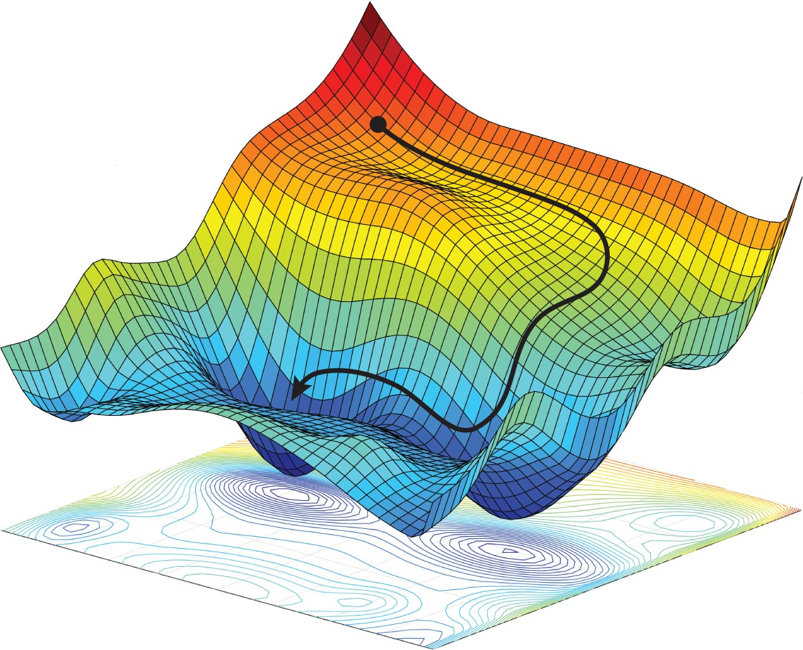

Research
|
 |
My current research focuses on designing and analyzing efficient optimization methods for problems emerging in contemporary domains, including data science, signal processing, and networking. My general interests and expertise can be grouped in three intertwined categories:
First-order methods for (non)convex optimization
Large-scale optimization and federated learning for IoT
Multi-armed bandits and their applications
To tackle challenges in these areas, my research follows a top-down approach, starting with efficient algorithms to solve a relatively general problem, before leveraging domain knowledge to address real-world applications. The lessons learned from the specific problem are fed back to the general one to gain the understanding.
|
First-order methods for (non)convex optimization
In a series of publications, we have contributed to first-order (i.e., gradient-based) algorithms, namely, variance reduction, acceleration (Nesterov's momentum), and Frank-Wolfe (FW, aka conditional gradient). As an example, we outline next one of our recent works on FW and its applications.
General theory.
We introduced and analyzed two FW variants, termed AFW and ExtraFW, aiming at convex optimization under structural constraints. The proposed algorithms inherit the merits of FW, such as low iterative computation cost and suitability to sparsity-promoting problems. More importantly, AFW and ExtraFW achieve (local) acceleration under a class of constraints that are widely used in machine learning, overcoming the main limitation of FW. In fact, AFW and ExtraFW belong to those few first-order algorithms that achieve (local) acceleration without relying on line-search or problem-dependent parameters such as Lipschitz constant in their step sizes. The theories are validated through numerical tests shown above. For binary classification, both AFW and ExtraFW perform surprisingly well, i.e., even faster than projected NAG (Nesterov's accelerated gradient). For matrix completion problems that are ubiquitous in recommender systems, the proposed algorithms find solutions with lower optimality error compared with FW.
A specific application. Here we introduce an interesting setting of pruning neural networks using AFW and ExtraFW. Although currently this is only a “proposal” mainly because I do not have enough time to follow up, we are optimistic that this will work. A recent ICML paper shows that pruning an overparametrized neural network is easier than those regular-sized ones when relying on (slightly modified) FW. They have unveiled a link between FW's convergence and the number of neurons left after pruning. However, “overparameterization” is a vague description since there is no guidance on the number of neurons required. To cope with such a problem, we postulate that the theoretical results of AFW and ExtraFW can be extended to pruning. As a result, AFW's (or ExtraFW's) quantifiable locally accelerated rate sheds light on the least number of neurons required to enjoy the merits of overparametrization. Besides, because AFW and ExtraFW are numerically more attractive than FW, we also expect that for neural network pruning they can share similar, if not improved, performance with FW.
Relevant works
B. Li, L. Wang, G. B. Giannakis, and Z. Zhao, “Enhancing Parameter-Free Frank Wolfe with an Extra Subproblem,” Proc. of 35th AAAI Conf. on Artificial Intelligence (AAAI), February 2-9, 2021.
B. Li, M. Coutino, G. B. Giannakis, and G. Leus, “A Momentum-Guided Frank-Wolfe Algorithm,” IEEE Transactions on Signal Processing, submitted September 2020.
Large-scale optimization and federated learning
The widespread consensus on future machine learning is that tasks should be performed locally on device directly to handle critical issues such as data privacy, data security, and heterogeneous data. Federated learning (FL) is a general framework in pursuit of this goal. Next we emphasize FL's application in Internet of Things (IoT) using some of our works as examples.
General theory. In a FL setting with a central server and multiple workers, many existing approaches aim to reduce the upload communication but not the download overhead. Consequently, the overall improvement of communication efficiency is still limited. We propose TWICE, a method that advocates compressing both upload and download innovation with guaranteed benefits; see the table above numerical performance. Another line of research addresses the challenges in asynchrony and delay due to e.g., IoT mobility and heterogeneity. In this context, we have developed DEXP3 for delayed online learning that can be run asynchronously on servers without sacrificing too much performance; see the first figure above.
Specific applications. FL is extremely suitable for IoT due to its scalability and robustness. As an example, consider an online energy management task in smart grids where the goal is learning to dispatch power in the most economical manner with the aid of renewables while maintaining the energy level of batteries stable in long-run. This specific “stability” requirement challenges the standard deployment of FL. We thus provide an elegant solution so that the requirement on the battery capacity to prevent overcharging is greatly reduced; see the green line in the last figure above. In a parallel work, FL is leveraged in edge computing setups so that devices can collaboratively handle adversarial jammers. In a nutshell, we see great potential of FL in various IoT applications, with the ultimate goal of benefiting everyone's daily life.
Relevant works
B. Li, T. Chen, and G. B. Giannakis, “Bandit Online Learning with Unknown Delays,” Proc. of Intl. Conf. on Artificial Intell. and Stat. (AISTATS), Naha, Japan, April 2019.
J.Sun, B. Li, T. Chen, Q.Yang, Z. Yang, and G. B. Giannakis, “TWICE: Two-Way Innovation Compression for Communication Efficient Federated Learning,” IEEE Transactions on Cybernetics, submitted July 2020.
B. Li, T. Chen, X. Wang, and G. B. Giannakis, “Real-time Optimal Energy Management with Reduced Battery Capacity Requirements,” IEEE Transactions on Smart Grid, vol. 10, no. 2, pp. 1928-1938, March 2019.
B. Li, T. Chen, and G. B. Giannakis, “Secure Mobile Edge Computing in IoT via Collaborative Online Learning,” IEEE Transactions on Signal Processing, vol. 67, no. 23, pp. 5922-5935, December 2019.
Multi-armed bandits and their applications
The multi-armed bandit (MAB) problem models a scenario where the learner copes with the “exploration-exploitation” dilemma to interactively learn from the environment. MAB is widely adopted in recommender systems, e.g., web search and online advertising, because its simple yet powerful framework facilitates sequential decision making under uncertainties. My background leans toward adversarial bandits, but still have a fair understanding on those stochastic ones.
General theory. Sometimes the traditional MAB model is oversimplified to capture real behaviors in recommender systems. We have developed provably efficient algorithms to handle two particular scenarios: MAB with unknown delay, and contextual MAB with graph feedback; see the above figure. Technically, our solutions rely on two biased estimators in contrast with typically adopted unbiased ones. Theoretical justifications are established to showcase that the proposed methods can indeed handle the target scenarios efficiently.
A Specific application. Despite aforementioned MAB theories can more or less find their applications in recommender systems, here we consider a more detailed setting, where the user preferences change in a piecewise-stationary manner in cascading bandits. In this context, the recommender system chooses a list of items for the user; and the user browses this list in order until clicking on the first attractive item. New approaches based on GLRT for change-point detection are developed with supportive theories and numerical experiments; see the figures above.
Relevant works
B. Li, T. Chen, and G. B. Giannakis, “Bandit Online Learning with Unknown Delays,” Proc. of Intl. Conf. on Artificial Intell. and Stat. (AISTATS), Naha, Japan, April 2019.
L. Wang, B. Li, H. Zhou, G. B. Giannakis, L. Varshney, and Z. Zhao, “Adversarial Linear Contextual Bandits with Graph-Structured Side Observations,” Proc. of 35th AAAI Conf. on Artificial Intelligence, February 2-9, 2021.
|